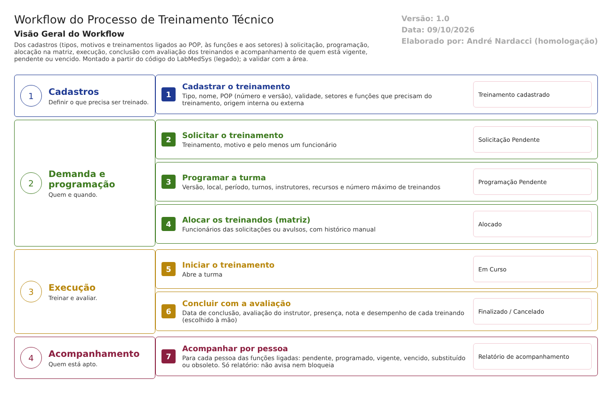

Objetivo
Este documento descreve o fluxo de treinamento técnico no LabMedSys. Vai dos cadastros (tipos, motivos e o treinamento ligado ao POP, às funções e aos setores) à solicitação, à programação da turma, à alocação dos treinandos na matriz, à execução, à conclusão com a avaliação de cada treinando e ao acompanhamento de quem está com o treinamento vigente, pendente ou vencido.
Foi montado a partir do código do sistema legado. O que depende da prática da área está marcado como a validar. Os casos de teste estão no fim.
Escopo
- Tipo de Treinamento, Motivo de Treinamento e Cadastro de Treinamento.
- Solicitação de Treinamento.
- Programação de Treinamento e Matriz de Treinamento (alocação e início).
- Conclusão do Treinamento.
- Acompanhamento dos Treinamentos.
- Consulta do Controle de Documentos aos treinamentos concluídos.
Fora do escopo: o que o Controle de Documentos faz com essa consulta, que será analisado com aquele módulo.
Nomes das telas: como aparecem no menu ou no alto de cada tela. Os caminhos de código são relativos a 5.garantia_qualidade/app/. Para encurtar: Bloco2/ quer dizer HSolutions.GQ.UI/Areas/Bloco2/Controllers/ e Service/ quer dizer HSolutions.GQ.Domain/Service/.
Visão geral do processo

Cada treinamento é cadastrado com o POP a que se refere (número e versão, ligado a um documento do Controle de Documentos), sua validade, os setores e funções que precisam dele e se é interno ou externo. As áreas fazem solicitações de treinamento para seus funcionários. A GQ programa a turma e, na Matriz de Treinamento, aloca os treinandos, vindos das solicitações ou avulsos, e inicia o treinamento.
Na conclusão, o instrutor registra a avaliação de cada treinando: presença, nota e desempenho (suficiente ou insuficiente). Quem fica "suficiente" recebe a data de vencimento do treinamento. O Acompanhamento dos Treinamentos cruza as funções ligadas a cada treinamento com as pessoas e mostra quem está pendente, programado, vigente, vencido, substituído ou obsoleto.
Situações da programação (como aparecem na tela):
| # | Situação | Próximo passo | Tela |
|---|---|---|---|
| 1 | Pendente | Alocar treinandos | Matriz de Treinamento |
| 2 | Alocado | Iniciar | Matriz de Treinamento |
| 3 | Em Curso | Concluir ou cancelar | Conclusão do Treinamento |
| 4 | Finalizado | — (fim) | — |
| — | Cancelado | — (fim) | Conclusão do Treinamento |
Descrição funcional das etapas
"A numeração das regras de negócio é reiniciada em cada atividade, visando facilitar sua identificação e manutenção."
Cadastros
Regras de negócio
- RN001 – Tipo e Motivo de Treinamento: só a descrição é obrigatória (
Service/TipoTreinamentoValidator.cs,Service/MotivoTreinamentoValidator.cs). A exclusão vai para a lixeira, sem histórico (Bloco2/TipoTreinamentoController.cs:242;Bloco2/MotivoTreinamentoController.cs:225). - RN002 – Cadastro de Treinamento: obrigatórios o tipo, o POP, o nome, o setor responsável, a origem e pelo menos um setor vinculado. Se a origem for externa, a instituição e o CNPJ também (
Service/CadastroTreinamentoValidator.cs:27a:80). - RN003 – O treinamento registra se é obrigatório, a validade (em dias, meses e anos), as funções e os setores vinculados, ou "todos", e o documento do POP no Controle de Documentos (
HSolutions.GQ.Domain/Entities/Bloco2/TreinamentoTecnico/TreinamentoTecnico.cs). - RN004 – Não se exclui um treinamento que já tem programação ou solicitação (
HSolutions.GQ.UI/Helpers/GerenciarAcessoTelaCadastroTreinamento.cs). Quando pode, a exclusão é sem histórico (Bloco2/CadastroTreinamentoController.cs:527).
Telas do sistema
| Módulo | Tela | Finalidade |
|---|---|---|
| Garantia da Qualidade | Tipo de Treinamento | Tipos |
| Garantia da Qualidade | Motivo de Treinamento | Motivos da solicitação |
| Garantia da Qualidade | Cadastro de Treinamento | Treinamento, POP, validade, funções e setores |
Solicitação
Regras de negócio
- RN001 – Obrigatórios: o treinamento, o motivo e pelo menos um funcionário (
Service/SolicitacaoTreinamentoValidator.cs:25a:36). - RN002 – A solicitação nasce Pendente (
Bloco2/SolicitacaoTreinamentoController.cs:230), com histórico. O cancelamento grava histórico (:277).
Telas do sistema
| Módulo | Tela | Finalidade |
|---|---|---|
| Garantia da Qualidade | Solicitação de Treinamento | Pedir treinamento para funcionários |
Programação e matriz
Regras de negócio
- RN001 – Programação: obrigatórios o treinamento, o nome da versão, o local, o período e um número máximo de treinandos maior que um (
Service/ProgramacaoTreinamentoValidator.cs:27a:51). Registra turnos, horários, custo, instrutores e recursos. Nasce Pendente (Bloco2/ProgramacaoTreinamentoController.cs:251). - RN002 – Não há aprovação do programa de treinamento pelo responsável da Produção ou do CQ (RDC 658/2022, art. 42).
- RN003 – Matriz: aloca os treinandos, vindos das solicitações ou avulsos, e a programação passa a Alocado. O histórico é gravado de forma manual (
Bloco2/MatrizTreinamentoController.cs:349-351). - RN004 – Iniciar leva a programação a Em Curso (
MatrizTreinamentoController.cs:484). - RN005 – A exclusão de uma programação é sem histórico (
ProgramacaoTreinamentoController.cs:601).
Telas do sistema
| Módulo | Tela | Finalidade |
|---|---|---|
| Garantia da Qualidade | Programação de Treinamento | Turma, local, período e instrutores |
| Garantia da Qualidade | Matriz de Treinamento | Alocar treinandos e iniciar |
Conclusão e avaliação
Regras de negócio
- RN001 – Obrigatórios: a data de conclusão, a avaliação do instrutor e a avaliação dos treinandos (
Service/ConclusaoTreinamentoValidator.cs:32a:44). A nota de cada treinando também ("Nota não informada!",Bloco2/ConclusaoTreinamentoController.cs:258). - RN002 – O tipo de avaliação (prática, teórica, escrita, oral) não é obrigatório: a regra está desligada (
ConclusaoTreinamentoValidator.cs:24-26, comentada). - RN003 – O desempenho (suficiente ou insuficiente) é escolhido à mão e não depende da nota nem da presença. O sistema só zera a nota de quem faltou (
ConclusaoTreinamentoController.cs:405-451). Não há nota mínima. Um treinando ausente, com nota zero, pode ser marcado como suficiente e recebe a data de vencimento do treinamento (:433e:450). Ponto de atenção 1. - RN004 – Ao concluir, a programação vai para Finalizado; ao cancelar, para Cancelado, e todos os treinandos ficam insuficientes. As duas gravações da situação são sem histórico (
ConclusaoTreinamentoController.cs:287-294). - RN005 – Antes de gravar, a tela confere a permissão da função no Principal (
ConclusaoTreinamentoController.cs:732).
Telas do sistema
| Módulo | Tela | Finalidade |
|---|---|---|
| Garantia da Qualidade | Conclusão do Treinamento | Presença, nota, desempenho e encerramento; certificado e relatório |
Acompanhamento e integração com o Controle de Documentos
Regras de negócio
- RN001 – O Acompanhamento dos Treinamentos busca no Principal as pessoas de cada função ligada ao treinamento (
Bloco2/AcompanhamentoTreinamentoController.cs:190-210). Para cada uma, mostra a situação: Pendente, Programado, Vigente, Vencido, Substituído ou Obsoleto (:501-554). - RN002 – O vencimento é calculado na hora do relatório. O sistema não avisa quem vai vencer e não impede que uma pessoa com treinamento vencido ou pendente trabalhe. Nenhum outro módulo consulta essa situação por pessoa.
- RN003 – O Controle de Documentos consulta a GQ pela interface
api/treinamento(HSolutions.GQ.UI/Api/TreinamentoController.cs). A consulta devolve as turmas concluídas de um treinamento ou de um documento (HSolutions.GQ.WebApi/TreinamentoApi.cs), e não quem foi aprovado. A verificar no Controle de Documentos como isso é usado para tornar um documento vigente.
Telas do sistema
| Módulo | Tela | Finalidade |
|---|---|---|
| Garantia da Qualidade | Acompanhamento dos Treinamentos | Situação de cada pessoa por treinamento |
Pontos de atenção
1. "Suficiente" sem critério. O desempenho é marcado à mão, sem nota mínima e sem considerar a presença. Uma pessoa ausente pode receber validade de treinamento. A RDC 658/2022 (art. 41) exige avaliar a efetividade do treinamento.
2. O treinamento não habilita nem bloqueia ninguém. O acompanhamento mostra quem está vencido ou pendente, mas só como relatório: não há aviso, e nenhum módulo (Produção, Estoque, CQ) impede a pessoa de executar a tarefa (art. 12, V).
3. O Controle de Documentos recebe a turma, não a pessoa. A consulta devolve treinamentos concluídos, sem dizer quem foi aprovado. Uma turma em que todos ficaram insuficientes também aparece como concluída.
4. Programa sem aprovação. A programação não tem etapa de aprovação pelo responsável (art. 42).
5. Registros sem histórico. A conclusão e o cancelamento da turma e as exclusões de tipo, motivo, treinamento e programação não deixam histórico. O tipo de avaliação deixou de ser obrigatório.
Ponto positivo: este é o fluxo mais completo da GQ. Liga treinamento, POP, função e pessoa, controla a validade e mostra a situação de cada pessoa. A matriz grava histórico.
Casos de teste
Dados: os usuários TESTE NIVEL 2 e TESTE NIVEL 3; dois funcionários de teste numa função TESTE; um POP TESTE no Controle de Documentos, se houver. Todos os treinamentos com nome começando por TESTE.
| Caso | O que fazer | Resultado esperado |
|---|---|---|
| CT-GQ-070 | Cadastro de Treinamento externo sem instituição e sem CNPJ | Recusa nos dois |
| CT-GQ-071 | Treinamento TESTE obrigatório, validade de 1 dia, ligado à função TESTE |
Salvo |
| CT-GQ-072 | Solicitação sem funcionário; depois com os dois funcionários | Recusa; depois Pendente |
| CT-GQ-073 | Programação com máximo de 1 treinando | Recusa |
| CT-GQ-074 | Programação válida, alocação dos dois na matriz e início | Alocado, depois Em Curso; histórico da alocação |
| CT-GQ-075 | Conclusão sem nota de um treinando | Recusa: "Nota não informada!" |
| CT-GQ-076 | Conclusão com um treinando ausente, nota 0, marcado "Suficiente" | Pela norma, deveria recusar. Registrar se aceitar e se ele receber validade (ponto 1) |
| CT-GQ-077 | Conclusão sem tipo de avaliação | Registrar que aceita |
| CT-GQ-078 | Consultar o histórico da programação concluída | Registrar se a mudança para Finalizado não aparecer (ponto 5) |
| CT-GQ-079 | Acompanhamento no dia seguinte (validade de 1 dia) | Os dois aparecem como Vencido; registrar que não há aviso |
| CT-GQ-080 | Com um funcionário vencido, executar uma tarefa na Produção ou no Estoque | Registrar que nada impede (ponto 2) |
| CT-GQ-081 | Turma em que todos ficam insuficientes; consultar no Controle de Documentos o treinamento do POP | Registrar se aparece como concluído (ponto 3) |
| CT-GQ-082 | Excluir um treinamento com programação | Recusa |
| CT-GQ-083 | Excluir um tipo de treinamento sem uso e consultar o histórico | Registrar a falta de histórico |
Prioridade (testes por risco): CT-GQ-076, 080, 081 e 078 primeiro. Eles tocam a efetividade do treinamento, a habilitação das pessoas e a trilha de auditoria.